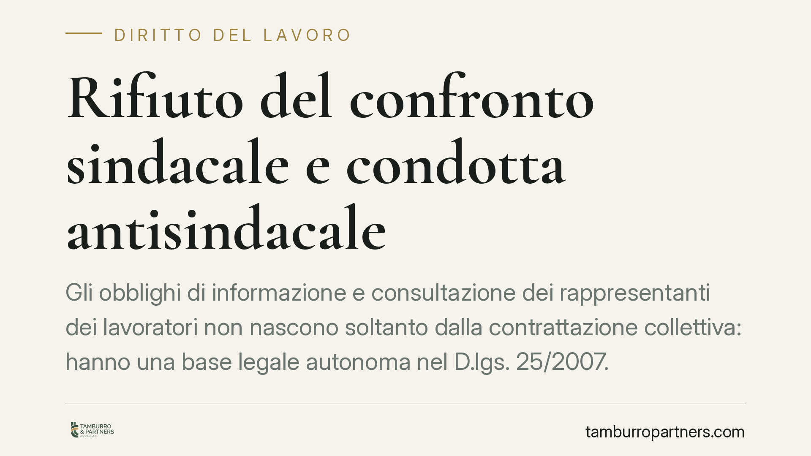

Rifiuto del confronto sindacale e condotta antisindacale
Gli obblighi di informazione e consultazione dei rappresentanti dei lavoratori non nascono soltanto dalla contrattazione collettiva: hanno una base legale autonoma nel D.lgs. 25/2007. La giurisprudenza di legittimità conferma che il rifiuto totale di ogni confronto sindacale può integrare condotta antisindacale ai sensi dell'art. 28 dello Statuto dei lavoratori. Un punto rilevante per le direzioni del personale.

Il quadro della questione
La relazione tra impresa e organizzazioni sindacali si regge su un principio spesso frainteso: la fonte degli obblighi di informazione e consultazione non è unicamente il contratto collettivo. Esiste una base legale autonoma, che vincola il datore a prescindere dal richiamo pattizio.
È un orientamento che la giurisprudenza di legittimità ha avuto occasione di confermare in controversie relative a datori di lavoro di dimensioni rilevanti, in cui la difesa aziendale sosteneva l'assenza di un obbligo di confronto per mancanza di una specifica previsione contrattuale. Impostazione respinta: il CCNL modula, non fonda.
Inquadramento normativo
Il riferimento è il D.lgs. 8 aprile 2007, n. 25, attuativo della direttiva 2002/14/CE, che ha istituito un quadro generale relativo all'informazione e alla consultazione dei lavoratori.
L'ambito di applicazione è delimitato dall'art. 3, che àncora la disciplina alle imprese che occupano almeno 50 dipendenti. Superata tale soglia, gli obblighi di informazione e consultazione operano in forza di legge. Gli oggetti del confronto — andamento dell'attività, situazione occupazionale, decisioni suscettibili di comportare modifiche rilevanti nell'organizzazione del lavoro — sono definiti dall'art. 4 e dalle disposizioni collegate, che ne articolano contenuti e modalità.
Il contratto collettivo può disciplinare tempi, sedi e procedure del confronto (art. 5), ma non può sopprimere un obbligo che ha radice legislativa. Da qui la distinzione operativa: la contrattazione collettiva modula l'esercizio degli obblighi, non li fonda.
Sul versante processuale opera l'art. 28 dello Statuto dei lavoratori (L. 300/1970), che offre alle organizzazioni sindacali un procedimento rapido e a contraddittorio semplificato per reprimere le condotte del datore dirette a impedire o limitare l'attività sindacale. Il giudice, accertata la condotta, ne ordina la cessazione con decreto.
Implicazioni pratiche
Il dato rilevante è la separazione tra fonte legale e fonte contrattuale. Un datore soggetto alla soglia dell'art. 3 non può opporre l'assenza di una clausola del CCNL per sottrarsi al confronto: l'obbligo esiste comunque.
Occorre però tenere ferma una seconda distinzione, altrettanto importante. Il rifiuto totale di ogni interlocuzione — la chiusura sistematica al confronto — è cosa diversa dalla legittima difesa di posizioni divergenti nel merito. Confrontarsi non significa cedere: il datore conserva pieno diritto di sostenere le proprie ragioni e di non accogliere le richieste sindacali. Ciò che l'ordinamento sanziona è il diniego pregiudiziale del dialogo, non il dissenso motivato.
Quanto ai profili sanzionatori, va corretta una convinzione diffusa. La violazione degli obblighi del D.lgs. 25/2007 non è di per sé reato. La rilevanza penale può profilarsi in un momento successivo e distinto: quando il datore non ottempera al decreto emesso dal giudice all'esito del procedimento ex art. 28, secondo i meccanismi di ottemperanza previsti dall'ordinamento. È l'inosservanza dell'ordine giudiziale — non la condotta originaria — a poter attivare quelle conseguenze.
Cosa fare in concreto
- Verificate la soglia dimensionale. Se l'impresa occupa almeno 50 dipendenti (art. 3 D.lgs. 25/2007), gli obblighi di informazione e consultazione operano indipendentemente dalle previsioni del CCNL.
- Mappate le materie soggette a confronto. Individuate ex ante le decisioni che comportano modifiche rilevanti nell'organizzazione o nei rapporti di lavoro, per non arrivare impreparati alle richieste sindacali.
- Documentate ogni interlocuzione. Convocazioni, ordini del giorno, verbali e riscontri scritti sono la prima linea di difesa contro una contestazione ex art. 28.
- Distinguete dissenso da rifiuto. Rispondete nel merito, motivando le posizioni aziendali. Evitate silenzi e chiusure preventive: sono questi a esporre al rischio di condotta antisindacale.
- Predisponete una procedura interna. Assegnate responsabilità e tempi di risposta alle richieste sindacali, così da garantire coerenza e tracciabilità.
Considerazione finale
Il confronto sindacale non è un adempimento negoziabile a discrezione dell'impresa: dove ricorrono i presupposti di legge, costituisce un obbligo. Gestirlo con metodo — anche in presenza di posizioni distanti — riduce l'esposizione a contenzioso e rafforza la solidità delle decisioni aziendali.
---
Contributo informativo a cura di Tamburro & Partners - Avv. Giuseppe Tamburro. Non costituisce parere legale.
Ogni storia di lavoro ha i suoi tempi.
Se gestisci HR e vuoi un confronto su contenzioso, ispezioni o licenziamenti, scrivi allo studio. Ti rispondiamo entro un giorno lavorativo.